15.07.2026 / critical / 5 min read
The thirty-euro router that wiretapped foreign ministries
APT28 turned thousands of home routers into a wiretapping network aimed at foreign ministries and law enforcement, hijacking DNS to steal already-authenticated OAuth tokens. No exotic malware — just the least-defended infrastructure on earth, and a US court order letting the FBI reach into five thousand privately owned devices to clean them up.

On 7 April 2026, five organisations that rarely sing from the same hymn sheet all published on the same day. The UK's NCSC. The FBI, alongside IC3, the NSA and fifteen other countries. The US Department of Justice, arriving with a court case already built. Microsoft Threat Intelligence. Lumen's Black Lotus Labs. Five accounts, no daylight between them: APT28 — Russia's GRU, 85th Main Special Service Centre, Military Unit 26165 — had stood up a wiretapping network against foreign ministries and law enforcement agencies.
Not with bespoke implants. With routers that cost less than a dinner out.
The origin
As attributions go, this one is about as good as the trade gets. NCSC uses "almost certainly" — the top rung of its probabilistic confidence ladder. DOJ went further than assessment and took the matter to a judge, where evidence answers to a different standard than a vendor blog. When five independent evidence chains — signals intelligence, product telemetry, backbone sinkholing, court filings — land on the same actor on the same morning, the attribution debate is over before it starts.
The timelines differ slightly, which is exactly what you'd expect. Microsoft dates the activity to August 2025; Lumen sees it beginning in May 2025, peaking between December 2025 and January 2026. Two sensors watching different layers — endpoints versus backbone — not two competing stories.
The scale is what stops you. More than 200 organisations compromised. Over 5,000 consumer devices. At least three African government bodies, one Afghan government entity, foreign ministries, police forces, and email and cloud providers across North Africa, Central America and Southeast Asia. Routers in Ukraine. And an initial foothold on a Nethesis firewall in Italy — not a target, a stepping stone. At its peak the infrastructure spanned over 18,000 unique IP addresses across 120-plus countries.
The way in was a TP-Link WR841N SOHO router, exploited — NCSC says "likely" — via CVE-2023-50224, which leaks credentials through unauthenticated, malformed HTTP GET requests. That hedge deserves to be read as written: it is the source's own qualifier, not boilerplate. The specific link between that model and that CVE is the weakest link in an otherwise unusually strong chain. No CVSS score was published. MikroTik devices and ageing Fortinet and Nethesis firewalls also appear in the campaign.
The attack chain
The mechanics are almost a teaching exercise.
The operators rent VPS capacity and run malicious DNS servers on it (T1583.002, T1583.003). From there they hit the router: one malformed GET lifts the management credentials, a second rewrites the device's DHCP/DNS settings (T1584.008). The router then keeps working flawlessly. No lag, no symptom, nothing a user would ever notice. It just quietly hands every laptop, phone and server behind it a GRU-controlled resolver over DHCP.
That resolver doesn't lie about everything — noisy and pointless. It lies selectively, against a surgical list of Microsoft domains: autodiscover-s.outlook[.]com, imap-mail.outlook[.]com, outlook.live[.]com, office[.]com, office365[.]com. Everything else resolves clean.
Victims following those answers land on attacker infrastructure, where the Adversary-in-the-Middle stage begins (T1557): a transparent proxy, or DNS spoofing fronted by an invalid TLS certificate whose only real cost is a browser warning that someone, eventually, clicks through.
And here is the part that matters. The AitM stage isn't primarily after passwords — it harvests already-authenticated OAuth tokens (T1586). A token is proof that MFA has already been satisfied. Stealing one doesn't break multi-factor authentication; it simply shows up afterwards and pockets the result. The victim's logs record no failure, no rejected second factor, no anomaly. They record a successful sign-in.
Detection
The infrastructure left workable fingerprints.
- Two distinct SSH banner clusters on the VPS estate, on TCP ports 56777 and 35681; dnsmasq-2.85 listening on UDP 53.
- Unplanned DHCP and DNS changes on edge routers — the cheapest and most consistently ignored signal in the business.
- Microsoft Defender alerts:
Forest Blizzard Actor activity detectedandStorm-2754 activity. - Entra ID Protection:
Microsoft Entra threat intelligence (sign-in). - Known AitM nodes: 64.120.31.96, 79.141.160.78.
One honest caveat on sourcing: every MITRE ID above comes from NCSC alone, the only one of the five publishers to map them. FBI, DOJ, Microsoft and Lumen describe the same behaviour without assigning identifiers.
Remediation
- Never expose router management to the internet. If the admin panel answers from the WAN, everything else is detail.
- Patch firmware; physically replace end-of-life hardware. An unpatchable router isn't hardened, it's binned.
- MFA everywhere — necessary, and as this campaign proves, not sufficient.
- Zero Trust DNS (ZTDNS) on Windows and certificate pinning. Both break the chain at the root by making a hostile resolver's answer irrelevant.
- Conditional Access plus passkeys for privileged accounts. Passkeys are origin-bound and refuse to be proxied.
- Periodically verify the authenticity of the resolvers actually in use.
What it teaches
Three lessons, and none of them are technical.
First: the worst-defended perimeter on the planet is the router. No EDR, no central logging, no clear owner. APT28 never breached a foreign ministry — it breached the thirty-euro box sitting upstream and let the ministry talk through it.
Second, a legal precedent that deserves far more argument than it has had. Under Operation Masquerade, DOJ secured authorisation across 23-plus US states for the FBI to push remote commands to thousands of privately owned routers and reset their DNS. Defensive disruption, and effective. But this is the first time at this scale that a federal agency has reached into citizens' homes — into hardware those citizens own — to fix it for them. The precedent outlives the campaign.
Third, the uncomfortable one: when the theft is of tokens, MFA isn't defeated. It's bypassed as irrelevant. Anyone whose security posture rests on "we have MFA, we're fine" doesn't have a weakness. They have a blind spot.